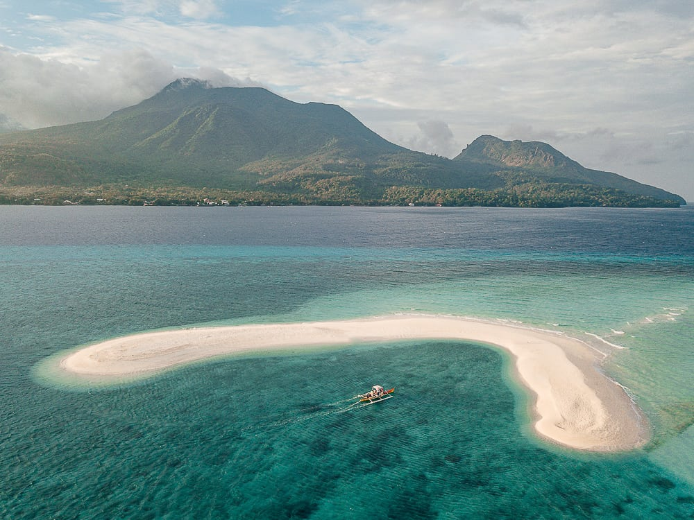

Enchanted River ( Surigao del Sur)
the bluest River in the world, The Enchanted River,
another mystic gem nestled in Hinatuan town in Surigao del Sur.
It is 290 meters long, but its depth remains a mystery for many divers.
Enchanted River ( Surigao del Sur)
the bluest River in the world, The Enchanted River,
another mystic gem nestled in Hinatuan town in Surigao del Sur.
It is 290 meters long, but its depth remains a mystery for many divers.
|
 Cloud 9 (Siargao)
Cloud 9 is recognized as one of the world’s best surfing destinations.
It is even ranked as one of the top ten waves worldwide,
where international surfing competitions are often held.
Cloud 9 (Siargao)
Cloud 9 is recognized as one of the world’s best surfing destinations.
It is even ranked as one of the top ten waves worldwide,
where international surfing competitions are often held.
|
|

White Island (Camiguin)
Emerged from the shifting tides off the coast of Mambajao,
Camiguin is a powdery white sandbar known as White Island.
It is also called the Naked Temptress.
|
 Video Gallery
Video Gallery Log-in
Log-in Contact Us
Contact Us